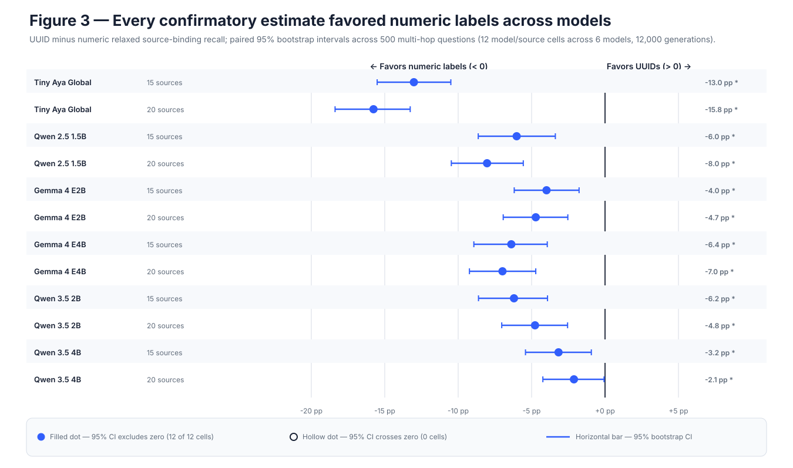
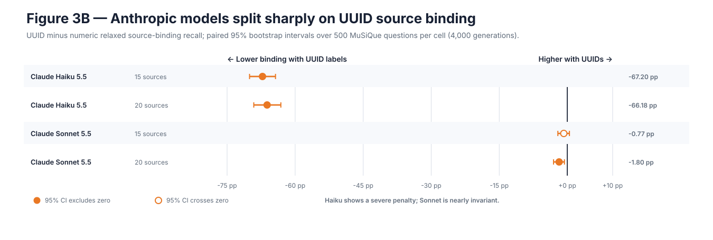

Hypothesis
High-entropy identifiers reduce relaxed source-binding recall even when official answer F1 remains similar.
Stages 02–03 · natural multi-hop
Balanced 2–4 hop MuSiQue questions are rendered with numeric or UUID source labels at 15 and 20 passages, then repeated in held-out, scaled, disjoint, and frontier cohorts.
Result in one line. UUID binding was lower in all 12 scaled local model/source-count cells; answer F1 did not move with the same universal pattern, and the four-model frontier cohort remained heterogeneous.
Natural multi-hop retrieval combines evidence across passages and makes answer quality and source attribution genuinely separable.
High-entropy identifiers reduce relaxed source-binding recall even when official answer F1 remains similar.
Independent cohorts or disjoint items should produce centered, mixed-direction binding deltas after pairing by semantic question.
2,400 generations · 6 models
UUID binding was lower in 12/12 cells; 6/12 unadjusted intervals excluded zero negatively. Three answer-F1 intervals excluded zero: one negative and two positive.
12,000 generations · 6 models
All 12 binding estimates and unadjusted intervals favored numeric labels. Four answer-F1 intervals excluded zero: two negative and two positive. A 401-item disjoint-only analysis preserved the headline.
8,000 generations
All 26 provider batches are terminal. Haiku shows a large citation-format penalty, Sonnet and Sol are near invariant, and Luna improves citation exact match while losing answer accuracy under UUIDs.
local binding intervals below zero
genuinely new items preserve headline
two positive and two negative intervals
| Model | Sources | Numeric | UUID | UUID − numeric (95% CI) |
|---|---|---|---|---|
| Tiny Aya | 20 | 39.4% | 23.6% | −15.8 pp [−18.4, −13.3] |
| Qwen 2.5 1.5B | 20 | 17.0% | 8.9% | −8.0 pp [−10.5, −5.6] |
| Gemma E4B | 20 | 43.0% | 36.0% | −7.0 pp [−9.2, −4.7] |
| Qwen 3.5 4B | 20 | 58.5% | 56.3% | −2.1 pp [−4.2, −0.1] |
| Model | Sources | Numeric | UUID | UUID − numeric |
|---|---|---|---|---|
| Claude Haiku 5.5 | 15 / 20 | 39.2% / 37.0% | 3.8% / 4.0% | −35.4 / −33.0 pp |
| Claude Sonnet 5.5 | 15 / 20 | 63.2% / 61.6% | 65.0% / 60.6% | +1.8 / −1.0 pp |
| GPT-6.1 Sol | 15 / 20 | 67.4% / 65.8% | 67.8% / 65.8% | +0.4 / 0.0 pp |
| GPT-6 Luna | 15 / 20 | 33.4% / 30.2% | 38.4% / 33.8% | +5.0 / +3.6 pp |


The replicated outcome concerns mapping an answer back to the correct evidence identifier. It is not evidence that UUIDs uniformly reduce general question-answering ability.
Compact source labels reduce attribution risk across this local fleet and dataset. Model-specific evaluation remains necessary because frontier architectures diverge sharply.
Cell intervals are paired bootstrap estimates. Unadjusted and Holm-controlled decisions are recorded separately.
The N=500 set overlaps earlier cohorts; the 401-item analysis checks that the result is not driven by reuse.
Haiku and Luna ran without reasoning; Sonnet and Sol used configured low reasoning. This is a behavioral comparison, not a mechanism claim.
MuSiQue is a demanding benchmark, not a complete model of production RAG.
FINDINGS_MUSIQUE_CONFIRMATORY.mdFINDINGS_MUSIQUE_500.mdresults/processed/musique_500_confirmatory.jsonresults/reports/frontier_evaluation_final.mdresults/processed/frontier_evaluation_summary.json